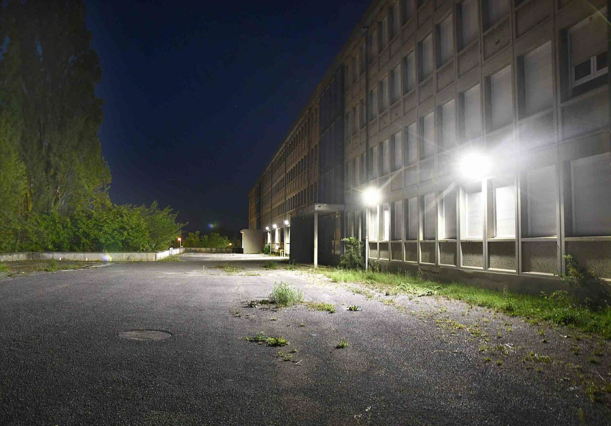
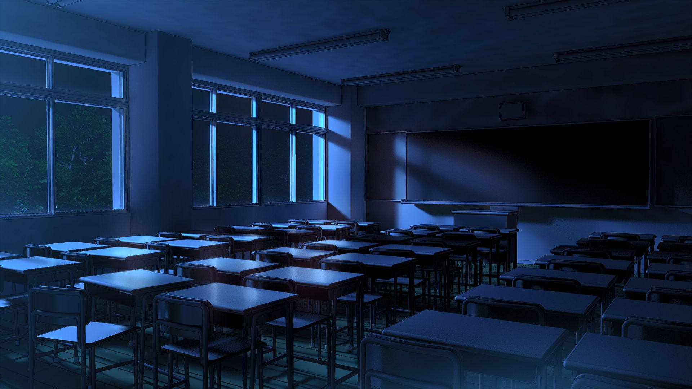

Une révélation glaçante secoue le lycée: un club secret, composé non pas d'éléves mais de professeurs, se réunirait clandestinement dans l"établissement pour planifier un acte terrifiant.Selon les indices récents, ce groupe pourrait etre impliqué dans un complot visant à assassiner un individu, peut-etre meme un membre du personnel ou un éléve jugé menaçant pour leurs projets. Tout a commencé par une série de découvertes troublantes. Des éléves, restés tard pour des activitées, affirment avoir vu des lumiéres allumées dans les salles de classe bien après la fermeture du lycée. plus étrange encore, certains professeurs auraient étés aperçus en train d'entrer dans des pièces verrouillées comme l'ancienne salle des archives. L'un des éléves, qui souhaite garder l'anonymat, témoigne: " Un, j'ai vu trois professeurs entrer dans le bureau de la peoviseur avec des dossiers à la mains. J'ai entendu dire des phrases comme " il en sait trop" et "il doit disparaitre avant la fin du mois!" c'était terrifiant. "
Depuis quelques jours, des messages cryptiques ont commencés à apparaitre dans les couloirs du lycée
Un éléve du club de musique affirme acoir trouvé une feuille dans une poubelle de la salle des professeurs. Cette dernière comportait des initiales, des dates, et une phrase soulignée : "Opération Silence". Les soupçons se portent sur un petit groupe de professeurs particulièrement influents, ceux qui participent régulièrement à cacher des événements passés. Certains éléves pensent que le lycée lui-meme cacherait un lourd secret, lié à un ancien scandale, que ce club cherche à protéger à tout prix. Malgrès les démentis de la direction, les rumeurs s'intensifient. Qui sont les membres de ce club? Et qu'essaient-ils réellement de cacher? Le mystère reste entier, mais le lycée semble plus sombre qu'il n'y parait.
